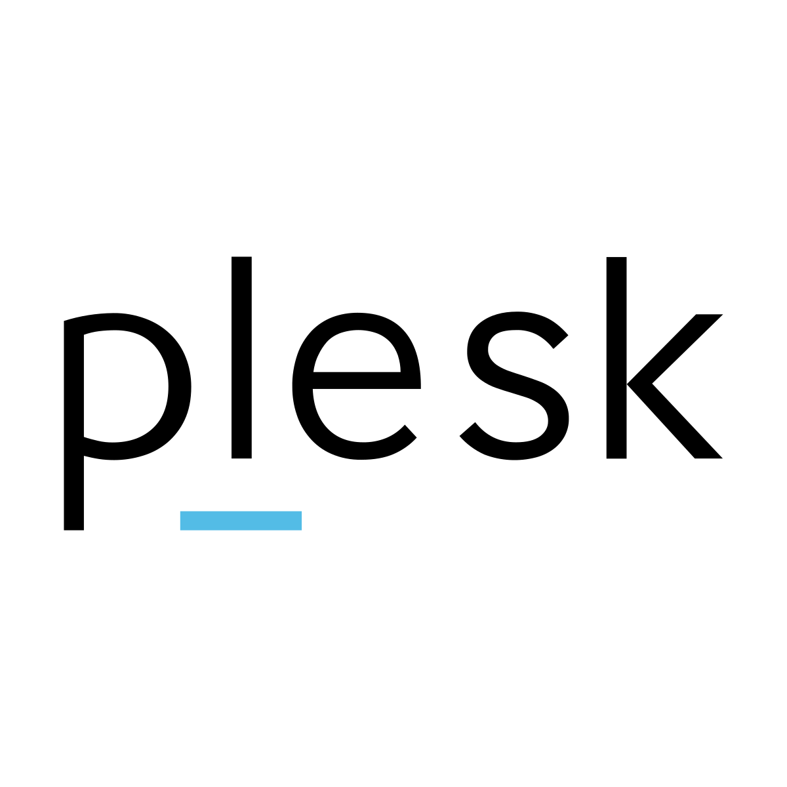
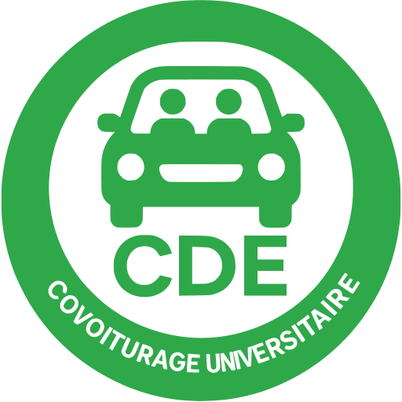
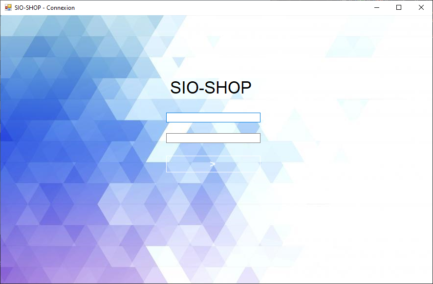
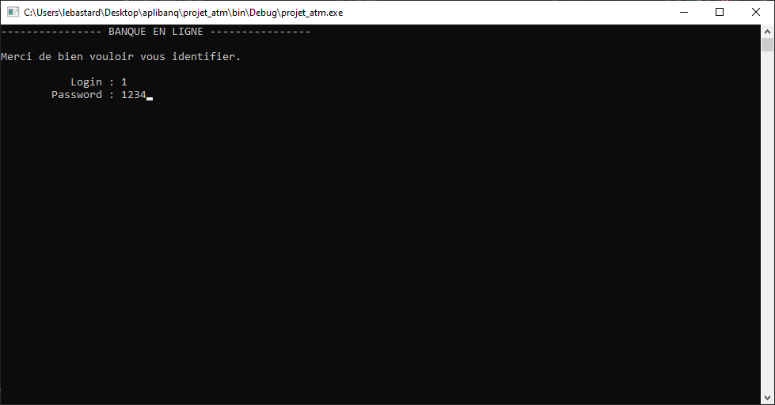

Mes Projets

Site E-commerce
PHP • SQL • API Bancaire
Création d'un site de dropshipping complet avec gestion de base de données et panel administrateur.

Application CDE
Kotlin • Room • SQLite
Développement d'une application mobile de covoiturage dédiée aux étudiants.

Carte Défibrillateurs
vueJS • API Géolocalisation
Projet SAE : Conception d'une carte interactive recensant les défibrillateurs disponibles en France.
Voir le projet →
Sioshop
WinForm
Développement d'une plateforme e-commerce complète. Gestion du catalogue, panier et espace client.

Aplibanq
C#
Création d'une application bancaire logicielle permettant la gestion des comptes et des transactions.